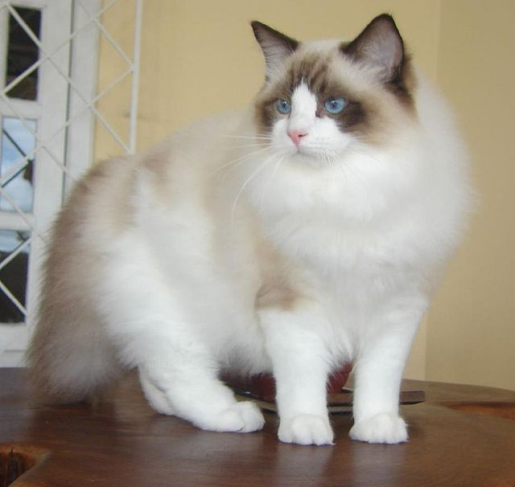

Mèo Britist Longhair (Mèo Anh Lông Dài)

1. Nguồn gốc của mèo Anh lông dài
Mèo Anh lông dài–mèo Ald hay British Longhair là kết quả lai tạo giữa mèo Anh lông ngắn và mèo Ba Tư.
Sau đó, để lại tạo ra mèo Anh lông dài thì: Có thể phối 2 chú mèo Anh lông dài với nhau, phối mèo Anh lông dài với Mèo Anh lông ngắn hoặc phối mèo Anh lông dài và mèo Ba Tư lông dài, mèo con có bộ lông dài và khuôn mặt của mèo Anh đều được chấp nhận là mèo Anh lông dài thuần chủng.
Mèo Ald được lai từ mèo Ba Tư và mèo Aln
Năm 2009, mèo Anh lông dài được TICA (Hiệp hội mèo thế giới) công nhận là một giống mèo cảnh độc lập, tuy nhiên ở Anh–quê hương của mèo Anh lông dài thì chúng vẫn chưa hoàn toàn được chấp nhận và phổ biến lắm.
2. Đặc điểm của giống mèo Anh lông dài thuần chủng
Mèo Anh lông dài chính là phiên bản lông dài của mèo Anh lông ngắn (mèo Aln). Chính vì thế, ngoại trừ bộ lông dài thì hầu hết các đặc điểm ngoại hình và tính cách của mèo Anh lông dài đều tương tự với mèo Anh lông ngắn.
Mèo Ald có khuôn mặt giống mèo Aln
2.1. Ngoại hình của mèo Anh lông dài
Mèo Ald có thân hình tròn trịa với khung xương to, thêm bộ lông xù dày nên nhìn mèo Ald khá mũm mĩm. Mèo Ald trưởng thành thường nặng khoảng 4-6kg, những bé mèo Ald chăm sóc tốt nặng đến 8kg.
Mèo Anh lông dài khá mũm mĩm
Đặc trưng nhận dạng của giống mèo Anh chính là chiếc đầu to, 2 má tròn trịa, vùng gần miệng thường hơi bè nên trông mèo Anh như đang cười.
Đôi chân của mèo Ald rất to, chắc nhưng mèo Anh lông dài lại di chuyển rất nhẹ nhàng, uyển chuyển nhờ vào lớp đệm chân dày. Chiếc đuôi của mèo Ald rất to, dày lông, giống như một chiếc bông lau.
Bộ lông dày, dài, xù của mèo Ald có bảng màu rất đa dạng như: mèo Anh lông dài màu vàng, mèo Ald trắng, mèo Anh lông dài tam thể, mèo Anh lông dài màu xám, mèo Anh lông dài Bicolor…
Mèo Ald với bộ lông xù, dày
Màu mắt của mèo Ald thường tương ứng với màu lông, mèo lông xám thường có mắt màu hổ phách hoặc xanh lục, mèo màu silver hay Chinchilla có mắt màu xanh lá và có một số bé mèo anh lông dài mắt 2 màu khác nhau.
Mèo Anh lông dài mắt màu xanh ngọc
Ngoài ra, khi mèo Anh lông dài lai với các giống mèo khác, sẽ xuất hiện các đặc điểm đáng yêu khác như: mèo Anh lông dài tai cụp (lai với mèo Scottish Fold), mèo Anh lông dài chân ngắn (lai với mèo Munchkin) hay mèo Anh lông dài lai mèo Ba Tư sẽ có khuôn mặt tịt, mèo Anh lông dài lai mèo ta…
Mèo Anh lông dài tai cụp
2.2. Tính cách của mèo Anh lông dài
Mèo Anh lông dài là những chú mèo điềm tĩnh. Trong có vẻ như mèo Ald rất sang chảnh, khó gần nhưng thực tế chúng khá hiền lành và quấn chủ, mèo Ald rất thích cuộn tròn nằm bên cạnh chủ hoặc được vuốt ve cưng nựng, nhưng chúng thường không thích bị bế.
Mèo Anh lông dài rất điềm tĩnh
Mèo Anh lông dài cũng rất hiền lành, ít quậy phá, thân thiện với mọi người và sống hoà đồng với các thú cưng khác trong nhà.
Mặc dù mèo Anh lông dài khá lười biếng, chúng dành phần lớn thời gian để nằm ngủ, nhưng nhiều lúc bạn sẽ thấy bất ngờ khi bắt gặp chúng điên cuồng đuổi theo một cái gì đó hoặc chơi cả giờ đồng hồ với các đồ chơi không chán.
Mèo Ald rất hứng thú với đồ chơi
Chính vì thế, nếu bạn rộn, không có nhiều thời gian chơi với mèo Ald thì bạn nên mua sắm cho chúng các đồ chơi để có thể tự giải trí nhé.
3. Giá mèo Anh lông dài bao nhiêu?
Mèo Anh lông dài không còn quá khó mua ở Việt Nam, vì bên cạnh mèo nhập khẩu thì có rất nhiều trại sinh sản có thể nhân giống được mèo Ald.
Giá mèo Anh lông dài vì thế cũng rất đa dạng, giao động lớn có thể chỉ từ 1triệu-trên 30 triệu đồng.
Giá mèo Anh lông dài rất đa dạng
– Giá mèo Anh lông dài lai, không thuần chủng: chỉ từ 1 triệu đồng/bé.
Những bé mèo này vẫn bộ lông dài, tuy nhiên các đặc điểm khác như mắt, mũi và chiếc nọng đặc trưng của mèo Anh thường không rõ.
– Giá mèo Anh lông dài thuần chủng được nhân giống tại Việt Nam: có giá từ 3-5triệu/bé.
Và giá có thể thay đổi lên xuống dựa vào ngoại hình của bé mèo và nguồn gốc của bố mẹ.
Mèo Anh lông dài nhập khẩu rất đẹp
– Giá mèo Anh lông dài thuần chủng nhập khẩu châu Á như Thái Lan, Malaysia hay Trung Quốc thì giá sẽ khoảng từ 9 triệu đồng/bé.
Đây là mèo Ald thuần chủng 100% được lai tạo từ bố mẹ là mèo Anh lông dài hoặc có thể là mèo Anh lông dài và mèo Ba Tư.
– Giá mèo Anh lông dài nhập khẩu từ các nước châu Âu, châu Mỹ thì ít nhất phải từ 1500$. Những bé mèo này có ngoại hình đẹp, sức khoẻ tốt và có giấy tờ chứng nhận thuần chủng và chứng minh gia phả.
Ngoài ra, giá mèo Anh lông dài còn phụ thuộc vào màu lông của bé mèo, mèo Ald màu xám có giá rẻ nhất vì độ phổ biến và đắt nhất là mèo Ald màu vàng (golden) vì màu này rất hiếm và muốn mua thì bạn phải đặt cọc ở các cửa hàng kinh doanh thú cưng từ rất lâu.
Mèo Anh lông dài màu vàng rất hiếm
4. Tổng hợp cách nuôi mèo Anh lông dài
Hướng dẫn cách nuôi và chăm sóc mèo Anh lông dài luôn khoẻ mạnh, đáng yêu.
< br>
4.1. Mèo Anh lông dài ăn gì?
Mèo Anh lông dài là một trong những chú mèo cảnh không quá kén ăn, có thể ăn được đa dạng loại thức ăn từ hạt khô, Pate cho mèo và nếu bạn tự nấu thức ăn cho mèo cũng được.
Mèo Anh lông dài không kén ăn
Nếu là thức ăn dạng thương mại thì nên kết hợp giữa hạt khô và Pate để cung cấp đủ nước cho mèo và thêm hương vị giúp mèo ăn ngon miệng hơn. Lưu ý chọn loại thức ăn đúng độ tuổi của mèo.
Hiện nay, trên thị trường có các loại thức ăn thương mại với các thành phần hỗ trợ chức năng giúp mèo đẹp lông, hạn chế búi lông cho mèo Anh lông dài, bạn có thể tham khảo thêm nhé.
Nếu bạn tự nấu Pate hay thức ăn cho mèo thì cần lưu ý trong thức ăn của mèo cần phải có Protein từ các loại thịt bò, heo, gà, hay cá.
Thức ăn cho mèo tự nấu cần có Protein
Cần hạn chế các loại thịt mỡ và tinh bột trong thức ăn sẽ dễ làm mèo Anh bị béo phì. Ngoài ra nên cho mèo ăn thêm các loại rau, củ nghiền nhuyễn để giúp mèo bổ sung vitamin và chất xơ hỗ trợ tiêu hoá. Cho thêm 1 vài giọt dầu olive hoặc dầu dừa vào thức ăn vừa giúp lông mèo bóng mượt, khoẻ hơn và giúp thức ăn thơm ngon hơn.
Lưu ý, luôn có nước uống thường xuyên cho mèo Anh lông dài.
4.2. Cách chăm sóc mèo Anh lông dài
Giống như các giống mèo lông dài khác, chăm sóc bộ lông cho mèo Ald chính là áp lực lớn nhất khi nuôi, đòi hỏi bạn phải thật sự kiên nhẫn.
Chải lông cho mèo lông dài thường xuyên
Mèo Anh lông dài cần được chải lông mỗi ngày, thậm chí 2 lần/ngày khi mèo vào mùa rụng lông. Chải lông để giúp lấy đi các sợi lông chết, phủi bụi trên lông và kích thích lớp lông mới mọc tốt hơn. Các sợi lông chết của mèo không được chải đi sẽ cuộn theo lông cũ làm lông mèo Ald rối, bết, nhanh bẩn hơn, ngoài ra, khi mèo liếm lông sẽ cuốn theo lông rụng và mèo dễ bị búi lông gây nôn ói, ho, khó thở.
Búi lông thường gặp ở mèo lông dài
Mèo Ald cần được tắm khoảng 2-3 lần/tháng để thơm tho, sạch sẽ. Dùng các sữa tắm dành cho mèo lông dài tắm cho mèo Anh và sấy thật khô lông sau khi tắm để tránh cho mèo bị nấm hay viêm da.
Mèo Ald cũng cần được vệ sinh mắt, tai thường xuyên. Dùng khăn ẩm để làm sạch gỉ mắt cho mèo mỗi ngày và kiểm tra vệ sinh chất sáp, nhớt trong tai mèo 2lần/tuần.
Khi vào mùa nắng nóng bạn có thể tỉa bớt lông cho mèo Ald để gọn gàng, sạch sẽ hơn, nhưng tuyệt đối đừng nên cạo lông của mèo nếu mèo không cần điều trị các vấn đề gì trên da.
4.3. Sức khoẻ của mèo Anh lông dài
Về cơ bản, mèo Anh lông dài là giống mèo khoẻ mạnh, có môi trường sống tốt và chăm sóc đúng cách tuổi thọ của mèo Anh lông dài khoảng 12-15 năm.
Mèo Ald có tuổi thọ khoảng 12-15 năm
Tuy nhiên, như các giống mèo khác, mèo Ald sẽ gặp các vấn đề sức khoẻ như:
– Mèo Ald bị béo phì: vì lười, ít vận động lại không kén ăn nên mèo Ald rất dễ bị béo phì, bạn cần lưu ý cho mèo vận động mỗi ngày, có thể chơi giỡn với mèo chạy lên xuống cầu thang, nhặt bóng hoặc chơi vờn cần câu mèo để tiêu năng lượng.
Cho mèo Ald vận động để tránh béo phì
– Mèo Ald gặp các bệnh di truyền: như bệnh tim hay bệnh thận đa nang. Lưu ý chọn mèo Anh có nguồn gốc tốt để hạn chế bị bệnh.
– Mèo Ald bị búi lông hay các vấn đề trên da như bị rận, bọ chét, viêm da: vấn đề phổ biến của các giống mèo lông dài.
Cần lưu ý để đảm bảo cho mèo Anh lông dài có sức khoẻ tốt:
– Vệ sinh môi trường sống của mèo thường xuyên: thay khay cát 3 ngày/lần, vệ sinh bát ăn, bát nước mỗi ngày, giặt giũ, lau chùi đồ chơi, đệm ngủ của mèo hàng tuần.
– Tiêm vac-xin và xổ giun đầy đủ, đúng định kỳ.
– Khám thú y định kỳ cho mèo 6 tháng hoặc 12 tháng 1 lần.
– Chỉ nên mua mèo ở các địa chỉ uy tín, không gặp các vấn đề về di truyền và chỉ mang mèo về nhà khi đã trên 2 tháng tuổi và tiêm đủ 2 mũi vac-xin.
Chăm sóc sức khoẻ cho mèo Ald
5. Có nên nuôi mèo Anh lông dài không?
Với tính cách hiền lành, điềm tĩnh, ít quậy phá của mình mèo Anh lông dài có thể phù hợp với nhiều gia đình, đặc biệt mèo Ald rất hoà đồng với các thú cưng khác và thân thiện khi chơi cùng trẻ con.
Mèo Ald không kén ăn, khá độc lập có thể tự chơi, tự giải trí một mình được.
Tuy nhiên, giống như các giống mèo lông dài khác, áp lực lớn nhất chính là chăm sóc bộ lông cho mèo.
Mèo Ald cần người chủ chăm chỉ, kiên nhẫn
Bộ lông của mèo Anh yêu cầu được chăm sóc thường xuyên, chỉ phù hợp với người chủ nuôi cẩn thận, kiên nhẫn với mèo. Do đó, nếu không có thời gian hoặc không đủ sự kiên trì để chăm sóc lông cho mèo Anh thì bạn nên cân nhắc chọn mua giống mèo có tính cách tương tự nhưng bộ lông ngắn, dễ chăm sóc hơn là mèo Aln.
Mèo British Shorthair (Mèo Anh Lông Ngắn)
Mèo Anh lông ngắn hay British shorthair là một trong những giống mèo đẹp nhất trên thế giới. Chúng chinh phục các con Sen bởi thân hình mũm mĩm, lông ngắn nhưng rất dày, mũi ngắn và khuôn mặt tròn cùng tính cách thân thiện, quấn chủ. Đây giống mèo rất được yêu thích tại Việt Nam.

Mèo Anh lông ngắn thuần chủng
Đây là giống mèo đã có từ rất lâu đời ở nước Anh. Là sự kết hợp của giống mèo Ai Cập cổ và những chú mèo đường phố ở Anh. Chúng được công nhận là một giống chuyên biệt và thuần chủng bởi CFA ( Hiệp hội mèo giống quốc tế) từ năm 1980.
Trước những năm 60 việc tìm một con mèo Anh lông ngắn thuần chủng khá khó khăn. Anh lông ngắn bị thất sủng đến mức đứng trước nguy cơ tuyệt chủng. Vì vậy, các nhà sinh học đã lai tạo những chú mèo còn lại với mèo Russian Blue và mèo Ba Tư để phát triển lại giống mèo Anh lông ngắn thuần chủng này.
Về ngoại hình:
Mèo Anh có trọng lượng khá lý tưởng, từ 4 – 8.5kg, phần đuôi lớn.
Mặt tròn, má phệ, mũi ngắn xinh xắn, nhỏ nhắn.
Tai mèo Anh có nhiều dạng khác nhau tùy vào khuôn mặt. Đôi mắt mèo Anh thuần chủng có màu vàng đồng đặc trưng mà giống mèo lai không thể có được.
Màu lông đặc trưng của Mèo Anh thuần chủng là màu xanh xám. Bộ lông ngắn, dày và mịn nhưng ít khi bị rụng. Tuy nhiên do quá trình lai tạo nên hiện nay giống mèo này rất đa dạng về màu lông
Tính cách của mèo Anh lông ngắn khá là dễ chịu. Chúng có thể tự chơi đùa, không thích sự ồn ào hay những nơi náo nhiệt mà chỉ muốn được yên tĩnh. Đặc điểm nổi trội ở giống mèo Anh này rất cuốn chủ, sống tính cảm, thích được vuốt ve và ôm ấp. Ngoài ra, có một tập tính xấu duy nhất ở tính cách của chúng chính là là sự lười biếng, ít vận động, chỉ muốn nằm một chỗ. Vì thế, khi được chăm tốt, chúng sẽ béo lên nhanh chóng như thể bị “phát tướng” vậy.
Một số màu lông mèo Anh lông ngắn phổ biến

Màu Bicolor: Mèo ALN bicolor này thật ra là mèo nhị thể. Những chú mèo Anh có dải lông trắng ở phần thân dưới bắt đầu từ sóng mũi còn thân trên có dải màu khác thì được công nhận là bicolor. Nổi tiếng nhất hiện này trong dòng bicolor là mèo Tuxedo.

Màu trắng: loài mèo này được lại tạo giữa mèo Anh thuần chủng và giống mèo khác có lông trắng

Màu xanh xám: Chúng được lai tạo từ những chú mèo Anh xám xanh thuần chủng với nhau

Màu lilac: Đây cũng được coi là màu của mèo Anh thuần chủng nhưng chúng không phổ biến như màu xám xanh

Màu hyma: Là kết quả của sự lai tạo giữa giống mèo Anh lông ngắn và mèo Xiêm của Thái Lan
Mèo Anh lông ngắn cũng rất dễ nuôi, chúng có sức khỏe tốt và tuổi thọ có thể lên tới hơn 10 năm. Bộ lông của mèo Anh lông ngắn thì khác với mèo Anh lông dài là chúng ngắn và dày, chỉ rụng vào mùa thay lông nên các bạn cần lưu ý thời điểm mùa thu, mùa xuân hãy thường xuyên chải lông cho chúng.
Thức ăn cho mèo Anh lông ngắn rất đa dạng từ những món ăn do bạn tự nấu hay đến đồ ăn khô như hạt, thức ăn đóng gói sẵn, chúng đều vô cùng yêu thích. Dù là loại thức ăn nào thì bạn cũng nên cân đối hàm lượng dưỡng chất protein, vitamin, chất xơ, hay tinh bột nạp vào cơ thể mèo để tránh những vấn đề về sức khỏe cho chú mèo của mình.
Những món ăn khoái khẩu của mèo Anh lông ngắn: Thịt gà, cá, pate, thức ăn hạt, sữa, pho mai,…..
Giá của mèo Anh lông ngắn tại Việt Nam
Hiện nay, giá mèo Anh lông ngắn rất đa dạng, tùy thuộc vào nguồn gốc, tuổi đời và màu sắc lông
Mèo Anh lông ngắn lai với các giống mèo khác như: Mèo Ba Tư, Exotic… Chúng có mức giá rẻ từ 2 – 5 triệu đồng/con.
Một chú mèo Anh thuần chủng được sinh ra tại Việt Nam sẽ rơi vào khoảng 5 – 10 triệu đồng/con.
Mèo Anh lông ngắn nhập từ các nước Trung Quốc, Thái Lan hoặc một số nước trong khu vực châu Á giá dao động từ 12 – 15 triệu/con.
Mèo Anh lông ngắn nhập khẩu trực tiếp từ châu Âu sẽ có mức giá từ 1000 - 2000 đô la tương đương với gần 50 triệu đồng/con. Nếu có giấy chứng nhận mèo thuần chủng của hiệp hội mèo thế giới.
Mèo Ragdoll

1.Nguồn gốc mèo Ragdoll
Ragdoll là tên của một giống mèo có đôi mắt màu xanh dương tuyệt đẹp, bộ lông 2 màu tương phản nhau. Ragdoll là giống mèo to lớn nhưng tính cách hiền lành, đáng yêu. Cái tên Ragdoll xuất phát từ thói quen rũ người và thả lỏng cơ thể khi được bế lên.
Vào thập niên 60 của thế kỷ 20, bà Ann Baker, một chuyên gia gây giống mèo Ba Tư ở California, đã chọn lọc những con mèo con từ mèo mẹ có tên là Josephine (mèo hoang, lông trắng, dài, giống Ba Tư lai với Turkish Angora) và những con mèo cha thuộc giống Birman, Burmese và 1 chú có bộ lông như mèo Xiêm.
mèo Ragdoll
Trong những lứa đầu ra đời, có Blackie (đực, đen tuyền, trông giống mèo Burmese) và Daddy Warbucks (lông đốm đen như mèo Xiêm, chân trắng ). Daddy Warbucks được lai với mèo nhị thể tên Fugianna, Blackie lai với BuckWheat (lông đen, giống Burmese). Fugianna và BuckWheat đều là con của Josephine.
Sau này, những chú mèo giống Ragdoll đều là hậu duệ của Daddy Warbucks, Fugianna và BuckWheat và mèo Ragdoll có nguồn gốc từ Mỹ.
2. Đặc điểm mèo Ragdoll
Đặc điểm hình thể
Mèo Ragdoll có hình thể to lớn hơn những mèo bình thường khác
Mèo Ragdoll có hình thể to lớn hơn những chú mèo bình thường khác. Chúng có bộ lông dài, đôi mắt xanh xinh đẹp đặc trưng. Đầu tròn được bao phủ bởi bộ lông xù, mõm hơi dài và nhọn, đôi tai mỏng dựng đứng. Ragdoll thường có những màu chủ yếu như màu socola, màu hoa cà, màu kem, màu xanh lam,...
Những hoa văn đặc trưng của mèo Ragdoll
Bi - color
Mèo sẽ có 2 màu, màu sẫm hơn ở trên tai và đỉnh đầu. Khuôn mặt trắng tinh, và trông giống hình tam giác lộn ngược, chiếc mũi hồng hào và toàn thân trắng muốt.
Ragdoll Van
Chỉ có điểm tối lớn trên tai và đuôi. Mũi và miếng đệm màu hồng.
Ragdoll Point
Tai, mặt, đuôi và bàn chân có màu tối hơn màu lông nền.
Ragdoll Mitted
Ragdoll Mitted sẽ có những điểm tối giống Ragdoll Point. Tuy nhiên, bàn chân của chúng có màu lông trắng sáng, từ bàn chân đến cổ chân, không đến đùi.
Do hình thể to lớn, nên tốc độ phát triển của chúng sẽ chậm hơn những giống mèo khác. Chúng phát triển hoàn toàn bộ lông của mình khi 2 tuổi và phát triển hoàn chỉnh kích thước lẫn cân nặng khi 4 tuổi.
Tuổi thọ trung bình của Ragdoll từ 12 -17 năm
Mèo đực trưởng thành thường nặng từ 6 - 9kg, mèo cái trưởng thành thường nặng từ 4,5 - 7kg. Đây là cân nặng bình thường của một chú mèo Ragdoll khỏe mạnh, không bị béo phì. Tuổi thọ trung bình của Ragdoll từ 12 -17 năm tùy thuộc vào điều kiện sống và cách chăm sóc.
Tính cách mèo Ragdoll
Mèo Ragdoll có tính cách dễ chịu, ngoan ngoãn nhưng khá nhút nhát.
Tính cách ngoan ngoãn và nghe lời của giống mèo Ragdoll, được cho là di truyền từ giống mèo Ba Tư và mèo Xiêm. Những đặc điểm điển hình của loài mèo này là: Nhẹ nhàng và dịu dàng. Hoạt bát, tình cảm và rất trung thành.
Những chú mèo Ragdoll có tính cách dễ chịu, ngoan ngoãn nhưng khá nhút nhát. Các bé Ragdoll rất quấn chủ của mình. Vì tính nhút nhát khá cao, nên những chú mèo Ragdoll không có khả năng tự vệ. Do đó, chủ của các bé phải thường xuyên để mắt đến các bé trước những tên trộm mèo.
Mèo Ragdoll không chỉ thân thiện với con người mà còn sống chan hòa với các vật nuôi khác. Khi cùng sống chung, mèo Ragdoll sẽ không gây sự và đánh nhau. Ngoài ra giống mèo này rất phù hợp với nhà có trẻ nhỏ
3
.Cách chăm sóc mèo Ragdoll
Chăm sóc sức khỏe cho mèo Ragdoll
Tuy là một giống mèo to, khỏe. Nhưng mèo Ragdoll thỉnh thoảng vẫn gặp những vấn đề về sức khỏe như bệnh khớp, bệnh tim và các bệnh về mắt. Chủ nuôi cần lưu ý đưa Ragdoll đến thú y để kiểm tra sức khỏe định kỳ.
Chế độ ăn cho mèo Ragdoll
Khẩu phần ăn cũng như lượng thức ăn cho mèo Ragdoll sẽ nhiều hơn những giống mèo cùng loại do Ragdoll có một hình thể to lớn hơn những chú mèo khác.
Bạn cần chú ý đến việc lựa chọn thức ăn cho mèo và chế độ tập luyện. Nếu những con mèo khác ăn 1 muỗng cà phê hạt khô mỗi khẩu phần, thì sẽ tăng lên 1,5 hoặc 2 muỗng canh hạt khô với mèo Ragdoll. Bên cạnh đó, sau 30 phút đến một giờ, bạn cần cho chúng ngồi dậy và chơi đùa hoặc cho đi dạo để tiêu hao năng lượng và tránh thừa cân.
Thức ăn cho mèo Ragdoll cũng tương tự như các loại mèo cưng khác. Nhóm thức ăn tươi sống này như thịt bò, thịt gà, nội tạng, rau củ đều cung cấp cho mèo một lượng protein và chất xơ thích hợp. Bạn cần chế biến cẩn thận để mèo Ragdoll không bị rối loạn tiêu hóa. Nếu không có nhiều thời gian nấu nướng, bạn có thể cho mèo ăn các loại hạt khô. Nhưng tiết kiệm nhất là bạn có thể tự chế biến tại nhà vừa rẻ vừa bổ dưỡng.
Chăm sóc lông và móng cho mèo Ragdoll
Ngoài ra, việc chăm sóc móng và lông của những chú mèo Ragdoll cũng rất quan trọng. Vì Ragdoll có một bộ lông dài và khá dày nên chủ nuôi cần thường xuyên chải lông cho chúng bằng lược cao su để có thể loại bỏ lông thừa, chấy rận và bụi bẩn. Chủ nuôi cũng cần tắm rửa và tỉa lông cho Ragdoll thường xuyên, khoảng 1 tuần 1 lần, để tránh được những căn bệnh về da.
Những chú mèo Ragdoll là những chú mèo dễ chịu nên việc cắt móng cho chúng cũng khá dễ dàng, nhưng chủ cần xem hướng dẫn cách cắt móng cho mèo trước để tránh làm đau các bé..
Những lưu ý khác khi chăm sóc mèo Ragdoll
Khi nuôi mèo Ragdoll chỉ cần lưu ý vài điều đơn giản sau:
- Dọn sạch sẽ khay vệ sinh của Ragdoll
- Thường xuyên cung cấp nước uống sạch cho chúng
4Bảng giá mèo Ragdoll
Giống mèo Ragdoll là một trong những giống mèo khá hiếm ở Việt Nam. Do đó, có rất ít trại nhân giống và nhập khẩu mèo về bán. Ngoài ra, thời tiết nóng ẩm của Việt Nam không thích hợp cho việc sinh trưởng và sinh sản của giống mèo này.
Mèo Ragdoll lai tại Việt Nam
Vì mèo Ragdoll ở Việt Nam đã được lai, nên những đặc điểm vốn có của một chú Ragdoll thuần chủng đã bị giảm đi rất nhiều. Giá thị trường dao động từ 6 - 8 triệu đồng/con.
Mèo Ragdoll nhập từ Thái Lan , Myanmar
Thái Lan và Myanmar là thị trường cung cấp mèo chất lượng. Giá của mỗi bé mèo dao động từ 10 - 15 triệu đồng/con. Tùy thuộc vào vẻ ngoài. Nếu vẻ ngoài càng đáng yêu, càng ưa nhìn và bộ lông phù hợp với thị hiếu thì giá sẽ càng cao.
mèo Ragdoll
Mèo Ragdoll nhập từ Châu Âu
Những bé Ragdoll được nhập từ Châu Âu, cho dù thuần chủng hay không, thì giá vẫn sẽ cao hơn ở Thái Lan, Myanmar và Việt Nam. Giá cao vì một phần do chi phí vận chuyển và chi phí chăm sóc.
Đối với những bé đã được triệt sản thì giá sẽ dao động ở mức 20 triệu đồng/con
Đối với những bé chưa triệt sản thì mức giá được nâng lên đến 30 triệu đồng/con, người nuôi thường mua những bé này về làm giống
Các yếu tố khác ảnh hưởng đến giá của mèo Ragdoll
- Độ thuần chủng của Ragdoll.
- Bộ lông càng dày, càng lộng lẫy thì giá của chúng càng cao